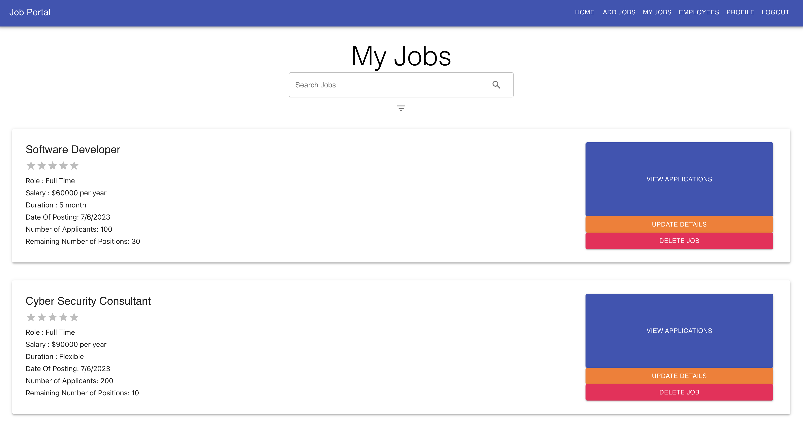
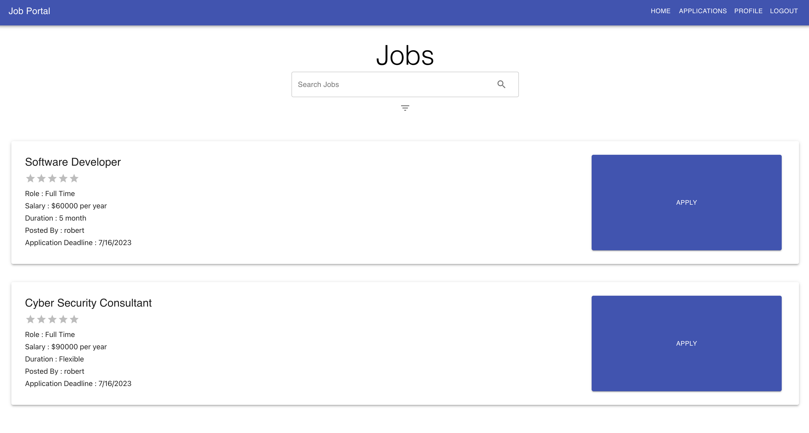

Recruiters view:
Employees view:
Developed a comprehensive web-based Job Portal application utilizing the MERN Stack (MongoDB, Express.js, React.js, Node.js). The platform facilitates seamless user registration as either applicants or recruiters, and features persistent login sessions safeguarded by JWT token verification. Recruiters can post, edit, or delete job listings, and manage applications by viewing resumes and altering application statuses. Applicants are equipped to browse job postings through an intelligent fuzzy search, apply with a Statement of Purpose, upload resumes, and modify profiles. Currently working on a demo site, although the project can be demo'd locally upon request from a recruiter
View DemoThis script extracts text content and image links from a given Wikipedia page, counts the frequency of words within the text, and saves the results to a CSV file. It makes an HTTP request to fetch the Wikipedia page's HTML, and utilizes BeautifulSoup to parse and extract paragraphs and image tags. The word frequencies are calculated by tokenizing the text and counting occurrences of each word, after removing non-alphanumeric characters. Finally, the script writes the total word count, the top N word frequencies, and the image links to an output CSV file.
View Source CodeCreated a custom Merge Sort algorithm in Java that used Insertion sort on small sub-arrays and Merge Sort with multithreading on larger arrays. Repository is private because this was a school project but ill explain/demo it upon request from a recruiter.